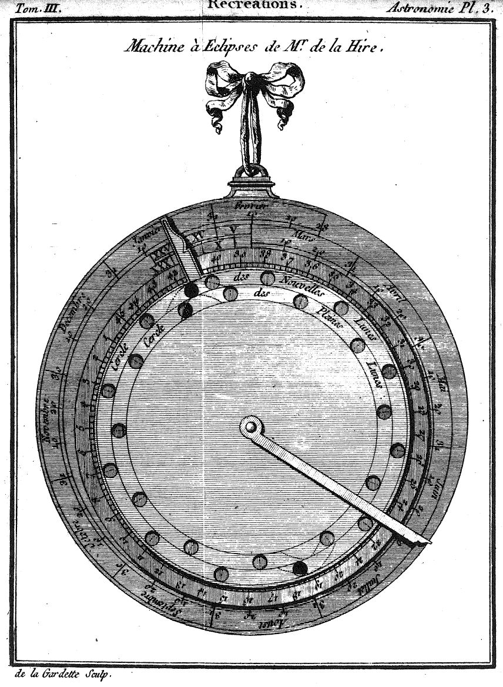

Introducción histórica
A principios del siglo XVIII existía un gran interés en encontrar métodos precisos para determinar la longitud geográfica. Uno de los métodos consistía en cronometrar las inmersiones y emersiones de los satélites de Júpiter; otro, en el uso y predicción de los eclipses lunares. Philippe de la Hire (1640-1718), un brillante matemático y astrónomo francés, concibió una ingeniosa máquina para automatizar estos complejos cálculos astronómicos. El instrumento original, detallado en su libro Tabulae Astronomicae, estaba compuesto por discos superpuestos o volvelles que podían girar para predecir un eclipse de sol o de luna para un periodo determinado.

Calculador de eclipses
Gracias a la simulación moderna, hemos reconstruido virtualmente la calculadora de eclipses de La Hire basándonos en sus precisas instrucciones matemáticas. La herramienta utiliza un ciclo de 179 años y escalas espirales para predecir eclipses mediante geometría analógica.
¿Cómo funciona el calculador?
La máquina se basa en una idea fundamental: un eclipse solo puede ocurrir cuando la Luna se encuentra en fase nueva o llena y, al mismo tiempo, está cerca de un punto específico de intersección orbital llamado "nodo".
El calculador representa la interacción de estos elementos clave:
- El calendario civil (meses y días).
- Las fases de luna nueva y luna llena.
- Las zonas críticas próximas a los nodos celestes.
- La aliada del eclipse, que actúa como indicador visual de alineación.
Cuando estos componentes coinciden exactamente sobre el borde fiducial de la regla, se produce un eclipse.
Las cuatro piezas del instrumento
La máquina reconstruida consta de cuatro capas concéntricas independientes:
- El disco inferior (Fijo): Lleva grabado el calendario (meses y días) dispuesto en espiral. Es la matriz temporal estática donde se lee directamente la fecha del año.
- El disco intermedio (Rotatorio): Contiene las zonas coloreadas que delimitan los nodos solares (en negro) y los nodos lunares (en rojo) en un año de eclipse o dracónico.
- El disco superior (Rotatorio / Aliada Principal): Incorpora las 13 ventanas o perforaciones circulares transparentes que representan las lunas nuevas (para eclipses de Sol) y las lunas llenas (para eclipses de Luna). Cuenta con una lengüeta o aliada para ajustar la época del año.
- La aliada del eclipse (Regla superior móvil): Una regla independiente diseñada con la estética de los astrolabios antiguos. Su borde derecho recto actúa como línea de precisión para señalar la fecha exacta evaluada en el calendario inferior y comprobar si cruza un nodo expuesto.
Ajustar la máquina
Paso 1 — Elegir el año
Cada año civil corresponde a un número de año lunar específico dentro del ciclo de 179 posiciones diseñado por de La Hire. Este número de época debe buscarse en la tabla de referencia cronológica.
Paso 2 — Calibrar la época en el calendario
Gira los discos superiores conjuntamente hasta alinear el índice o lengüeta del año lunar elegido con su fecha y hora exactas de inicio en el calendario inferior. Por ejemplo, para el año 2026, el número lunar es el 178 y debe hacerse coincidir rigurosamente con la posición del 14 de julio a las 15:25 UTC. Una vez hecho esto, los discos intermedio y superior quedan fijados entre sí.
Paso 3 — Apuntar la aliada del eclipse
Gira de forma independiente la aliada superior del eclipse hasta situar su borde fiducial sobre la fecha del día que deseas explorar en el calendario.
¿Cómo se determina la existencia de un eclipse?
Observa los orificios circulares del disco superior que quedan atravesados por el borde de la aliada:
- Si un orificio circular deja ver una zona coloreada del disco intermedio debajo de la regla → un eclipse es posible en esa fecha.
- Si el orificio corresponde a una Luna Nueva (ventanas externas con el símbolo solar ☉) → Eclipse de Sol.
- Si el orificio corresponde a una Luna Llena (ventanas internas con el símbolo lunar ☾) → Eclipse de Luna.
- Cuanto mayor sea la superficie de la zona coloreada que emerge a través de la ventana transparente, más central y cercano a la totalidad será el eclipse.
Tabla de Años Lunares y Épocas
| N° Ciclo | Año Civil | Fecha | Hora (UTC) |
|---|---|---|---|
| 124 | 1800 | 22 de junio | 02:47 |
| 125 | 1801 | 11 de junio | 11:35 |
| 126 | 1802 | 31 de mayo | 20:24 |
| 127 | 1803 | 21 de mayo | 05:12 |
| 128 | 1804 | 9 de mayo | 14:01 |
| 129 | 1805 | 28 de abril | 22:49 |
| 130 | 1806 | 18 de abril | 07:38 |
| 131 | 1807 | 7 de abril | 16:27 |
| 132 | 1808 | 27 de marzo | 01:15 |
| 133 | 1809 | 16 de marzo | 10:04 |
| 134 | 1810 | 5 de marzo | 18:52 |
| 135 | 1811 | 23 de febrero | 03:41 |
| 136 | 1812 | 12 de febrero | 12:30 |
| 137 | 1813 | 31 de enero | 21:18 |
| 138 | 1814 | 21 de enero | 06:07 |
| 139 | 1815 | 10 de enero | 14:55 |
| 140 | 1815 | 30 de diciembre | 23:44 |
| 141 | 1816 | 19 de diciembre | 08:32 |
| 142 | 1817 | 8 de diciembre | 17:21 |
| 143 | 1818 | 28 de noviembre | 02:10 |
| 144 | 1819 | 17 de noviembre | 10:58 |
| 145 | 1820 | 5 de noviembre | 19:47 |
| 146 | 1821 | 26 de octubre | 04:35 |
| 147 | 1822 | 15 de octubre | 13:24 |
| 148 | 1823 | 4 de octubre | 22:12 |
| 149 | 1824 | 23 de septiembre | 07:01 |
| 150 | 1825 | 12 de septiembre | 15:50 |
| 151 | 1826 | 2 de septiembre | 00:38 |
| 152 | 1827 | 22 de agosto | 09:27 |
| 153 | 1828 | 10 de agosto | 18:15 |
| 154 | 1829 | 31 de julio | 03:04 |
| 155 | 1830 | 20 de julio | 11:52 |
| 156 | 1831 | 9 de julio | 20:41 |
| 157 | 1832 | 28 de junio | 05:30 |
| 158 | 1833 | 17 de junio | 14:18 |
| 159 | 1834 | 6 de junio | 23:07 |
| 160 | 1835 | 27 de mayo | 07:55 |
| 161 | 1836 | 15 de mayo | 16:44 |
| 162 | 1837 | 5 de mayo | 01:32 |
| 163 | 1838 | 24 de abril | 10:21 |
| 164 | 1839 | 13 de abril | 19:10 |
| 165 | 1840 | 2 de abril | 03:58 |
| 166 | 1841 | 22 de marzo | 12:47 |
| 167 | 1842 | 11 de marzo | 21:35 |
| 168 | 1843 | 1 de marzo | 06:24 |
| 169 | 1844 | 18 de febrero | 15:13 |
| 170 | 1845 | 7 de febrero | 00:01 |
| 171 | 1846 | 27 de enero | 08:50 |
| 172 | 1847 | 16 de enero | 17:38 |
| 173 | 1848 | 6 de enero | 02:27 |
| 174 | 1848 | 25 de diciembre | 11:15 |
| 175 | 1849 | 14 de diciembre | 20:04 |
| 176 | 1850 | 4 de diciembre | 04:53 |
| 177 | 1851 | 23 de noviembre | 13:41 |
| 178 | 1852 | 11 de noviembre | 22:30 |
| 179 | 1853 | 1 de noviembre | 07:18 |
| 1 | 1854 | 21 de octubre | 16:07 |
| 2 | 1855 | 11 de octubre | 00:55 |
| 3 | 1856 | 29 de septiembre | 09:44 |
| 4 | 1857 | 18 de septiembre | 18:33 |
| 5 | 1858 | 8 de septiembre | 03:21 |
| 6 | 1859 | 28 de agosto | 12:10 |
| 7 | 1860 | 16 de agosto | 20:58 |
| 8 | 1861 | 6 de agosto | 05:47 |
| 9 | 1862 | 26 de julio | 14:35 |
| 10 | 1863 | 15 de julio | 23:24 |
| 11 | 1864 | 4 de julio | 08:13 |
| 12 | 1865 | 23 de junio | 17:01 |
| 13 | 1866 | 13 de junio | 01:50 |
| 14 | 1867 | 2 de junio | 10:38 |
| 15 | 1868 | 21 de mayo | 19:27 |
| 16 | 1869 | 11 de mayo | 04:15 |
| 17 | 1870 | 30 de abril | 13:04 |
| 18 | 1871 | 19 de abril | 21:53 |
| 19 | 1872 | 8 de abril | 06:41 |
| 20 | 1873 | 28 de marzo | 15:30 |
| 21 | 1874 | 18 de marzo | 00:18 |
| 22 | 1875 | 7 de marzo | 09:07 |
| 23 | 1876 | 24 de febrero | 17:56 |
| 24 | 1877 | 13 de febrero | 02:44 |
| 25 | 1878 | 2 de febrero | 11:33 |
| 26 | 1879 | 22 de enero | 20:21 |
| 27 | 1880 | 12 de enero | 05:10 |
| 28 | 1880 | 31 de diciembre | 13:58 |
| 29 | 1881 | 20 de diciembre | 22:47 |
| 30 | 1882 | 10 de diciembre | 07:36 |
| 31 | 1883 | 29 de noviembre | 16:24 |
| 32 | 1884 | 18 de noviembre | 01:13 |
| 33 | 1885 | 7 de noviembre | 10:01 |
| 34 | 1886 | 27 de octubre | 18:50 |
| 35 | 1887 | 17 de octubre | 03:38 |
| 36 | 1888 | 5 de octubre | 12:27 |
| 37 | 1889 | 24 de septiembre | 21:16 |
| 38 | 1890 | 14 de septiembre | 06:04 |
| 39 | 1891 | 3 de septiembre | 14:53 |
| 40 | 1892 | 22 de agosto | 23:41 |
| 41 | 1893 | 12 de agosto | 08:30 |
| 42 | 1894 | 1 de agosto | 17:18 |
| 43 | 1895 | 22 de julio | 02:07 |
| 44 | 1896 | 10 de julio | 10:56 |
| 45 | 1897 | 29 de junio | 19:44 |
| 46 | 1898 | 19 de junio | 04:33 |
| 47 | 1899 | 8 de junio | 13:21 |
| 48 | 1900 | 28 de mayo | 22:10 |
| 49 | 1901 | 18 de mayo | 06:58 |
| 50 | 1902 | 7 de mayo | 15:47 |
| 51 | 1903 | 27 de abril | 00:36 |
| 52 | 1904 | 15 de abril | 09:24 |
| 53 | 1905 | 4 de abril | 18:13 |
| 54 | 1906 | 25 de marzo | 03:01 |
| 55 | 1907 | 14 de marzo | 11:50 |
| 56 | 1908 | 2 de marzo | 20:38 |
| 57 | 1909 | 20 de febrero | 05:27 |
| 58 | 1910 | 9 de febrero | 14:16 |
| 59 | 1911 | 29 de enero | 23:04 |
| 60 | 1912 | 19 de enero | 07:53 |
| 61 | 1913 | 7 de enero | 16:41 |
| 62 | 1913 | 28 de diciembre | 01:30 |
| 63 | 1914 | 17 de diciembre | 10:19 |
| 64 | 1915 | 6 de diciembre | 19:07 |
| 65 | 1916 | 25 de noviembre | 03:56 |
| 66 | 1917 | 14 de noviembre | 12:44 |
| 67 | 1918 | 3 de noviembre | 21:33 |
| 68 | 1919 | 24 de octubre | 06:21 |
| 69 | 1920 | 12 de octubre | 15:10 |
| 70 | 1921 | 1 de octubre | 23:59 |
| 71 | 1922 | 21 de septiembre | 08:47 |
| 72 | 1923 | 10 de septiembre | 17:36 |
| 73 | 1924 | 30 de agosto | 02:24 |
| 74 | 1925 | 19 de agosto | 11:13 |
| 75 | 1926 | 8 de agosto | 20:01 |
| 76 | 1927 | 29 de julio | 04:50 |
| 77 | 1928 | 17 de julio | 13:39 |
| 78 | 1929 | 6 de julio | 22:27 |
| 79 | 1930 | 26 de junio | 07:16 |
| 80 | 1931 | 15 de junio | 16:04 |
| 81 | 1932 | 4 de junio | 00:53 |
| 82 | 1933 | 24 de mayo | 09:41 |
| 83 | 1934 | 13 de mayo | 18:30 |
| 84 | 1935 | 3 de mayo | 03:19 |
| 85 | 1936 | 21 de abril | 12:07 |
| 86 | 1937 | 10 de abril | 20:56 |
| 87 | 1938 | 31 de marzo | 05:44 |
| 88 | 1939 | 20 de marzo | 14:33 |
| 89 | 1940 | 8 de marzo | 23:21 |
| 90 | 1941 | 26 de febrero | 08:10 |
| 91 | 1942 | 15 de febrero | 16:59 |
| 92 | 1943 | 5 de febrero | 01:47 |
| 93 | 1944 | 25 de enero | 10:36 |
| 94 | 1945 | 13 de enero | 19:24 |
| 95 | 1946 | 3 de enero | 04:13 |
| 96 | 1946 | 23 de diciembre | 13:02 |
| 97 | 1947 | 12 de diciembre | 21:50 |
| 98 | 1948 | 1 de diciembre | 06:39 |
| 99 | 1949 | 20 de noviembre | 15:27 |
| 100 | 1950 | 10 de noviembre | 00:16 |
| 101 | 1951 | 30 de octubre | 09:04 |
| 102 | 1952 | 18 de octubre | 17:53 |
| 103 | 1953 | 8 de octubre | 02:42 |
| 104 | 1954 | 27 de septiembre | 11:30 |
| 105 | 1955 | 16 de septiembre | 20:19 |
| 106 | 1956 | 5 de septiembre | 05:07 |
| 107 | 1957 | 25 de agosto | 13:56 |
| 108 | 1958 | 14 de agosto | 22:44 |
| 109 | 1959 | 4 de agosto | 07:33 |
| 110 | 1960 | 23 de julio | 16:22 |
| 111 | 1961 | 13 de julio | 01:10 |
| 112 | 1962 | 2 de julio | 09:59 |
| 113 | 1963 | 21 de junio | 18:47 |
| 114 | 1964 | 10 de junio | 03:36 |
| 115 | 1965 | 30 de mayo | 12:24 |
| 116 | 1966 | 19 de mayo | 21:13 |
| 117 | 1967 | 9 de mayo | 06:02 |
| 118 | 1968 | 27 de abril | 14:50 |
| 119 | 1969 | 16 de abril | 23:39 |
| 120 | 1970 | 6 de abril | 08:27 |
| 121 | 1971 | 26 de marzo | 17:16 |
| 122 | 1972 | 15 de marzo | 02:04 |
| 123 | 1973 | 4 de marzo | 10:53 |
| 124 | 1974 | 21 de febrero | 19:42 |
| 125 | 1975 | 11 de febrero | 04:30 |
| 126 | 1976 | 31 de enero | 13:19 |
| 127 | 1977 | 19 de enero | 22:07 |
| 128 | 1978 | 9 de enero | 06:56 |
| 129 | 1978 | 29 de diciembre | 15:45 |
| 130 | 1979 | 19 de diciembre | 00:33 |
| 131 | 1980 | 7 de diciembre | 09:22 |
| 132 | 1981 | 26 de noviembre | 18:10 |
| 133 | 1982 | 16 de noviembre | 02:59 |
| 134 | 1983 | 5 de noviembre | 11:47 |
| 135 | 1984 | 24 de octubre | 20:36 |
| 136 | 1985 | 14 de octubre | 05:25 |
| 137 | 1986 | 3 de octubre | 14:13 |
| 138 | 1987 | 22 de septiembre | 23:02 |
| 139 | 1988 | 11 de septiembre | 07:50 |
| 140 | 1989 | 31 de agosto | 16:39 |
| 141 | 1990 | 21 de agosto | 01:27 |
| 142 | 1991 | 10 de agosto | 10:16 |
| 143 | 1992 | 29 de julio | 19:05 |
| 144 | 1993 | 19 de julio | 03:53 |
| 145 | 1994 | 8 de julio | 12:42 |
| 146 | 1995 | 27 de junio | 21:30 |
| 147 | 1996 | 16 de junio | 06:19 |
| 148 | 1997 | 5 de junio | 15:07 |
| 149 | 1998 | 25 de mayo | 23:56 |
| 150 | 1999 | 15 de mayo | 08:45 |
| 151 | 2000 | 3 de mayo | 17:33 |
| 152 | 2001 | 23 de abril | 02:22 |
| 153 | 2002 | 12 de abril | 11:10 |
| 154 | 2003 | 1 de abril | 19:59 |
| 155 | 2004 | 21 de marzo | 04:47 |
| 156 | 2005 | 10 de marzo | 13:36 |
| 157 | 2006 | 27 de febrero | 22:25 |
| 158 | 2007 | 17 de febrero | 07:13 |
| 159 | 2008 | 6 de febrero | 16:02 |
| 160 | 2009 | 26 de enero | 00:50 |
| 161 | 2010 | 15 de enero | 09:39 |
| 162 | 2011 | 4 de enero | 18:28 |
| 163 | 2011 | 25 de diciembre | 03:16 |
| 164 | 2012 | 13 de diciembre | 12:05 |
| 165 | 2013 | 2 de diciembre | 20:53 |
| 166 | 2014 | 22 de noviembre | 05:42 |
| 167 | 2015 | 11 de noviembre | 14:30 |
| 168 | 2016 | 30 de octubre | 23:19 |
| 169 | 2017 | 20 de octubre | 08:08 |
| 170 | 2018 | 9 de octubre | 16:56 |
| 171 | 2019 | 29 de septiembre | 01:45 |
| 172 | 2020 | 17 de septiembre | 10:33 |
| 173 | 2021 | 6 de septiembre | 19:22 |
| 174 | 2022 | 27 de agosto | 04:10 |
| 175 | 2023 | 16 de agosto | 12:59 |
| 176 | 2024 | 4 de agosto | 21:48 |
| 177 | 2025 | 25 de julio | 06:36 |
| 178 | 2026 | 14 de julio | 15:25 |
| 179 | 2027 | 4 de julio | 00:13 |
| 1 | 2028 | 22 de junio | 09:02 |
| 2 | 2029 | 11 de junio | 17:50 |
| 3 | 2030 | 1 de junio | 02:39 |
| 4 | 2031 | 21 de mayo | 11:28 |
| 5 | 2032 | 9 de mayo | 20:16 |
| 6 | 2033 | 29 de abril | 05:05 |
| 7 | 2034 | 18 de abril | 13:53 |
| 8 | 2035 | 7 de abril | 22:42 |
| 9 | 2036 | 27 de marzo | 07:30 |
| 10 | 2037 | 16 de marzo | 16:19 |
| 11 | 2038 | 6 de marzo | 01:08 |
| 12 | 2039 | 23 de febrero | 09:56 |
| 13 | 2040 | 12 de febrero | 18:45 |
| 14 | 2041 | 1 de febrero | 03:33 |
| 15 | 2042 | 21 de enero | 12:22 |
| 16 | 2043 | 10 de enero | 21:10 |
| 17 | 2043 | 31 de diciembre | 05:59 |
| 18 | 2044 | 19 de diciembre | 14:48 |
| 19 | 2045 | 8 de diciembre | 23:36 |
| 20 | 2046 | 28 de noviembre | 08:25 |
| 21 | 2047 | 17 de noviembre | 17:13 |
| 22 | 2048 | 6 de noviembre | 02:02 |
| 23 | 2049 | 26 de octubre | 10:51 |
| 24 | 2050 | 15 de octubre | 19:39 |
| 25 | 2051 | 5 de octubre | 04:28 |
| 26 | 2052 | 23 de septiembre | 13:16 |
| 27 | 2053 | 12 de septiembre | 22:05 |
| 28 | 2054 | 2 de septiembre | 06:53 |
| 29 | 2055 | 22 de agosto | 15:42 |
| 30 | 2056 | 11 de agosto | 00:31 |
| 31 | 2057 | 31 de julio | 09:19 |
| 32 | 2058 | 20 de julio | 18:08 |
| 33 | 2059 | 10 de julio | 02:56 |
| 34 | 2060 | 28 de junio | 11:45 |
| 35 | 2061 | 17 de junio | 20:33 |
| 36 | 2062 | 7 de junio | 05:22 |
| 37 | 2063 | 27 de mayo | 14:11 |
| 38 | 2064 | 15 de mayo | 22:59 |
| 39 | 2065 | 5 de mayo | 07:48 |
| 40 | 2066 | 24 de abril | 16:36 |
| 41 | 2067 | 14 de abril | 01:25 |
La Volvelle (Discos giratorios)
Modo de Arrastre (Interacción Directa)
* Arrastre el ratón o el dedo sobre los discos circulares para girarlos.
Elección de Próximos Eclipses
Ajuste preciso de los discos (volvelles) y la regla
La Dinámica de los Eclipses: Geometría y Visibilidad
Para comprender el alcance y los límites de esta máquina, es esencial diferenciar la naturaleza geométrica de los eclipses, tal y como Philippe de La Hire detalló en su obra. La órbita de la Luna presenta una inclinación de aproximadamente 5° respecto al plano de la órbita terrestre (la eclíptica). Esto provoca que la mayor parte del tiempo la Luna pase por encima o por debajo del Sol sin ocultarlo. Sin embargo, cuando la Luna cruza dicho plano terrestre, atraviesa lo que se conoce como nodos (representados por las zonas negra y roja en el disco intermedio de la máquina). Si una Luna Nueva o Llena coincide espacialmente con esta intersección, ocurre un eclipse.
El instrumento predice esta coincidencia temporal de manera magistral, pero debemos tener en cuenta una diferencia fundamental en la visibilidad de los fenómenos:
- Eclipses de Luna (Universales): Ocurren cuando la Tierra se interpone entre el Sol y la Luna. Al privar a la Luna de la luz solar que refleja, el eclipse lunar ocurre exactamente en el mismo instante y con la misma magnitud (medida históricamente en dedos o doceavas partes del disco) para cualquier habitante del planeta donde la Luna esté sobre el horizonte local.
- Eclipses de Sol (Locales): En rigor astronómico y geocéntrico, se trata de verdaderos "eclipses de Tierra". La Luna, siendo mucho más pequeña, proyecta una sombra que apenas barre una fina franja de la superficie terrestre, avanzando siempre de occidente a oriente. Por tanto, aunque la máquina indique la existencia de un eclipse solar (zona negra), este no será visible de forma global; dependerá estrictamente de tu latitud, la hora local de la conjunción y la paralaje lunar. La máquina nos muestra la geometría universal de los cielos, no los detalles geográficos locales.
El Ciclo Analógico y la Decimotercera Lunación
La Hire estructuró este calculador sobre un ciclo principal de 179 años lunares. Un año solar civil (de 365 días y un cuarto) no encaja de forma exacta con los ciclos de las fases lunares. Doce meses lunares (sabiendo que una lunación media dura 29 días, 12 horas y 44 minutos) suman apenas unos 354 días y 9 horas. Para acoplar mecánicamente estas dos métricas, el disco inferior distribuye los 365 días del año civil en un inteligente patrón espiral, permitiendo que la máquina asimile la diferencia progresiva entre ambos calendarios.
Una característica brillante del diseño de La Hire es la inclusión deliberada de 13 ventanas transparentes en lugar de las 12 que conforman un año lunar regular. Como el año lunar es aproximadamente 11 días más corto que el año civil, las lunaciones se van desplazando progresivamente con respecto a los meses de nuestro calendario. La decimotercera ventana actúa como un eslabón o "puente" matemático que se solapa sobre los primeros días del siguiente año lunar. Esto garantiza la continuidad del cálculo sin interrupciones, asegurando que el observador no pierda en el vacío ningún eclipse que ocurra justo en el tenso límite entre dos años consecutivos.
El Horizonte Temporal: Reglas de Lectura
Esta adición de la decimotercera luna impone una estricta regla geométrica a la hora de realizar la lectura de las fechas mediante el borde recto de la regla indicadora de eclipses o aliada superior. La aliada marca un punto exacto en el tiempo, actuando como nuestra frontera temporal:
- Hacia el Futuro: Si deseamos explorar los eclipses que ocurrirán después de la fecha fijada como referencia de calibración en la lengüeta, debemos alinear el borde izquierdo de la regla con dicha fecha en el calendario. A partir de ahí, leeremos las fases lunares avanzando a través de los agujeros hacia la derecha, siguiendo la dirección cronológica espiral de los meses.
- Hacia el Pasado: Si, por el contrario, queremos verificar posibles eclipses ocurridos antes de nuestra fecha de referencia (o en los meses iniciales previos al ciclo de ese año lunar), utilizaremos el borde derecho de la aliada como indicador y exploraremos las ventanas lunares moviéndonos visualmente hacia la izquierda.
El uso de la Epacta en el Calculador
En el calendario eclesiástico y astronómico, la epacta representa la edad de la Luna (en días) en una fecha específica del año, calculada mediante un sistema cíclico. Mientras que en el calendario gregoriano esta fecha suele ser el comienzo del año, Philippe de La Hire utiliza el cálculo astronómico medio y define la epacta para el instrumento como la edad de la Luna el 1 de marzo.
Justo antes del 1 de marzo en el disco inferior, notarás una escala espiral especial de 30 días. Esta escala sirve precisamente para encontrar la epacta sin necesidad de cálculos matemáticos complejos, los cuales tradicionalmente requerían usar años vencidos y tiempo astronómico de mediodía a mediodía.
Para hallar la epacta de un año concreto utilizando la máquina, el procedimiento es el siguiente:
- Se configura el instrumento para la época del año anterior al que deseamos consultar.
- Se hace girar el conjunto hacia el año del siguiente eclipse.
- A continuación, se lee el valor en la escala de epactas (los 30 días previos a marzo) que coincida exactamente con la luna nueva.
Dado que la distancia entre el 1 de enero y el 1 de marzo es de 59 o 60 días (muy cercana a dos meses lunares exactos de 29,5 días), la epacta leída para el 1 de marzo en esta máquina es casi idéntica a la epacta oficial gregoriana del 1 de enero.
Referencias Bibliográficas
Gislén, L., & Eade, C. (2016). Philippe de la Hire’s eighteenth century eclipse predictor. Journal of Astronomical History and Heritage, 19(1), 46–54. doi.org
Gislén, L. (2018). A commentary on the volvelles in Petrus Apianus' Astronomicum Caesareum. Journal of Astronomical History and Heritage, 21(2&3), 135–201.
La Hire, P. de (1702). Tabulae astronomicae Ludovici Magni jussu et munificentia exaratae et in lucem editae. Parisiis: Apud Joannem Boudot.
Ozanam, J. (1778). Récréations mathématiques et physiques (Vol. 3). Chez C.-A. Jombert.
Günergun, F. (2011). The Ottoman Ambassador’s curiosity coffer: Eclipse prediction with De La Hire’s ‘‘machine’’ crafted by Bion of Paris. En F. Günergun & D. Raina (Eds.), Science between Europe and Asia: Boston Studies in the Philosophy of Science (Vol. 275, pp. 103–123). Springer. doi.org